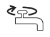

Erklärt dem KD, dass möglicherweise unnötige Kosten entstehen können
und dass ihr
das vermeiden wollt. Im Endeffekt helft ihr sowohl euch / uns (durch CA) als auch dem KD, dem ihr
Rechnungen erspart. Nennt die Anfahrtskosten die im System stehen.
Wenn ihr merkt, dass der KD euch schnell dazu bringen will einen Termin auszumachen und
meint er hätte alles kontrolliert (was euch offensichtlich als falsch auffällt), dann
hinterfragt das
und lasst euch nicht abwimmeln (bringt meistens weder euch noch dem KD etwas):
"Ist der Fehler zum ersten Mal aufgetreten ?"
"Was haben Sie beladen als das Gerät nicht geschleudert hat ?"
"Haben Sie hinter das Flusensieb gesehen ?"
"Haben Sie auch den OWI Sensor gereinigt ?"
Wenn der KD an euren Aussagen zweifelt: ratet die Bedienungsanleitung zu lesen und im Internet zu
recherchieren. Meistens ist alles genau nachlesbar.
Achtet auf das Lieferdatum ! Viele kennen sich noch nicht richtig aus.
Das bedeutet, dass bei neueren Geräten die meisten CA möglich sind. Unterscheidet zwischen: Jüngeren KD: das könnte ihr erstes Gerät sein. Vielleicht wissen sie noch
garnicht was ein Flusensieb ist.
Älteren KD: sagen meistens, dass ihr Gerät, das sie 30 Jahre lang hatten anders
funktioniert hat. Klar, heutzutage gibt es neue Technologien, mit verschiedensten Sensoren ! Etliche
Faktoren spielen eine Rolle.
Vermeidet es bei jedem Fehler(code) gleich zu einem Reset zu raten. Das funktioniert in Wirklichkeit
nur selten und das Call Avoidance Tool (oder diese Seite) bietet meistens ganz andere Lösungen an.
Eine unnötige Anweisung zu einem Reset senkt euer CA% meistens nur.
Bedeutet: Reset allein als letzte Instanz, wenn ihr keine andere Lösung habt. Oder gleich ganz
darauf verzichten.
WICHTIG: bittet den KD vor jedem Eingriff das Gerät vom Stromnetz zu nehmen !!
Waschmaschinen
"Schleudert nicht / Geräusche beim Schleudern."
Hier gibt es die meisten CA's zu holen. Die Leute wissen nicht,
dass man die Maschine laut Handbuch beladen muss, damit sie richtig schleudert. Viele, vor allem
erfahrene Benutzer, kennen das nicht.
KD:"Aber bei meine alte Maschine hat immer geschleudert !" WIR:"Heutzutage ist das anders ! Moderne WM haben eine UNWUCHTKONTROLLE,
die Schäden
an der Maschine verhindern soll."
WIR:"Wieviel und welche Art von Kleidung haben Sie beladen ?" KD:"Nicht so viel, eigentlich nur Unterwäsche. Da passen doch 7kg
hinein !" WIR:"Genau da liegt wahrscheinlich der Fehler. Auch kleinere Wäschemengen
können
zu einer erhöhten UNWUCHT führen. Das können Sie in Ihrem Handbuch
nachlesen."
KD:"Ich habe da nur ein paar Handtücher hineingelegt." WIR:"Bei großen Wäschestücken wie Bettwäsche, oder Handtüchern kann es
passieren, dass diese
sich beim Schleudern ungünstig in der Trommel verteilen und zur Unwucht führen !"
WIR:"Lockern Sie die Wäsche auf und geben Sie weitere Wäschestücke hinzu.
Wenn die Trommel
voll beladen und die Wäsche gut verteilt ist, funktioniert das Schleudern meist besser
als bei einer teilweise beladenen Trommel."
Wenn die WM nicht abpumpen kann, schleudert sie auch nicht. Die Wäsche wird durch
das zusätzliche Wasser schwer und macht Schleudern unmöglich. Bittet den KD das Flusensieb (und das
Pumpenrad dahinter) zu kontrollieren.
Oft schleudert das Gerät nicht weil es schief steht ("Haben Sie eine Wasserwaage verwendet ?" ).KD:"Das Gerät macht beim Schleudern schleifende/schlagende Geräusche.":
Wenn der KD sagt, dass das Gerät beim Schleudern Geräusche macht (vor allem, wenn es nur ein Mal
passiert ist), dann bittet ihn einen Leerlauf durchzuführen. Falls hier keine Geräusche entstehen,
hat man die WM wahrscheinlich falsch beladen. Zwecks Fehlerbehebung siehe auch Kapitel: "Pumpt nicht ab".
"Zeit verändert sich, wäscht kürzer/ länger."
Auch in dem Fall lässt sich meistens ein CA herausholen, da die Maschinen moderne Sensoren haben,
die die Zeit verkürzen / verlängern. Auch das kennen viele Anrufer nicht. Wenn sich die Programmzeit auf dem Display ändert (sogar
bis zu 30% länger bzw. kürzer !) erklärt ihr: "Die WM passt sich vielen Faktoren an,
die sich auf die Waschzeit auswirken können. Wie zum Beispiel:".
starke Schaumbildung
ungleiche Beladung mit schweren Wäschestücken
längere Aufheizzeit bei kälterem Wasser
die Wäschemenge
der Schmutzgrad der Wäsche
Diese Faktoren wirken sich alle auf die Zeitanzeige aus. Es ist völlig normal, dass
sich die Zeit auf dem Display dauernd ändert !
"Hat mitten im Waschgang aufgehört."
Wahrscheinlich ist in dem Fall etwas in das Flusensieb gerutscht. Sagt dem KD er solle gleich das
Flusensieb kontrollieren (versucht den KD am Telefon zu behalten). Meistens ist hier etwas in das
Flusensieb hineingeflogen. Möglicherweise bekommt der KD das Flusensieb nur sehr schwer auf (nur
noch ein Indiz darauf, dass etwas drinnen steckt). Hier soll der KD sogar etwas Kraft anwenden:
"Auch wenn es sehr unwahrscheinlich ist, weil das Flusensieb sehr stabil ist: wenden Sie
lieber etwas Kraft an und öffnen es, da ein neues Flusensieb sicher billiger ist, als ein
Techniker der kommt und es öffnet, nur um festzustellen, dass etwas hineingeflogen ist."
Oft in Verbindung mit den Fehlern F02 und F05 (siehe Fehlercodes).
"Fehlercode / Signallämpchen."
F02 (Baukn/Whrl)
Dieser Fehler bedeutet, dass Wasser in die Bodenwanne
gelaufen ist und die Maschine kein Wasser zieht, um Überschwemmungen zu verhindern. Meistens ist
zu viel Waschmittel und die dadurch entstandene, starke Schaumbildung der Auslöser. Manchmal ist zu viel Druck schuld. Wasser fließt so
stark durch den Waschmittelkasten, dass es vorbeifließt und sich in der Bodenwanne sammelt.
Der KD soll Folgendes machen:
Die WM vom Stromnetz nehmen und den Wasserhahn abdrehen.
Das Flusensieb / Flügelrad gründlich reinigen.
Das Gerät bei offenem Flusensieb kippen um (gründlich !) das Restwasser zu
entleeren.
Die Düsen über der Waschmittelschublade reinigen.
Eventuell den Wasserdruck regulieren.
Das Gerät für 30 Minuten ohne Strom offen (zum Trocknen) stehen lassen.
Danach wieder ans Netz stecken und einen Leerlauf starten um es zu durchzuspülen.
Beim nächsten Waschgang weniger Waschmittel oder anderes Waschmittel verwenden.
F05 (Priv/Inde)
Hier ist fast immer die Pumpe durch einen Gegenstand im Flusensieb blockiert:
Zuerst soll der KD das Gerät vom Stromnetz nehmen und die Wasserzufuhr abdrehen.
Danach ist der erste Schritt ins Flusensieb zu sehen (dabei bleibt es meistens. Ziemlich
sicherer CA !).
Natürlich langsam öffnen und Tücher bzw. Gefäße verwenden.
KD: "Es lässt sich nicht oder nur schwer öffnen !"
Der KD kann hier etwas mehr Kraft anwenden falls sich das Flusensieb nich öffnen
lässt. Erklärt, dass Techniker bei Eigenverschulden meistens teurer sind als ein
neues Flusensieb (das Ding ist außerdem ziemlich robust und ihr könnt euch fast
sicher sein, dass da was drinnen steckt wenn man es schwer hinausbekommt.).
Danach sollte ein Reset durchgeführt werden, indem die "START/STOPP"-Taste fur
mindestens 5
Sekunden gedrückt wird.
F06
"Wahrscheinlich haben Sie die WM überladen." Hier
muss zuerst das Wasser abgelassen werden, da man ansonsten die Tür nicht aufmachen kann. Sagt Folgendes:
Ein schmales Gefäß / Tücher unter die Flusensiebklappe legen und ganz
langsam
die Verschraubung des Flusensiebes nach links drehen.
(Bei einigen WM gibt es einen kleinen Schlauch um das Wasser abzulassen. Hier kann man auch
eine Schüssel / kleinen Kübel verwenden).
Falls das Ablassen der Wassers den Türmechanismus noch nicht freigesetzt hat: bei den
meisten Geräten kann man eine sog. Notöffnung durchführen (siehe
Zusatzinformationen).
Als Nächstes das Programm mit weniger Wäsche fortführen.
Falls es nicht gleich weitergeht: Gerät resetten bzw. vom Stromnetz nehmen und ein
neues
Programm starten (15 Minuten warten).
F08
Hier handelt es sich um einen Heizungsfehler der durch zu viel Schaum bzw. Kalk- und
Waschmittelablagerungen entsteht. Ja, auch dieser Fehler lässt sich ab und zu beseitigen
(natürlich nur, wenn das Gerät noch startet):
"Machen Sie einen Leerlauf mit Entkalker. Danach spülen Sie das Gerät
2 Mal bei
95 Grad mit reinem, heißen Wasser."
"Wasserhahn zu" LED 
Die Leuchte signalisiert, dass die WM keine oder unzureichende Wasserversorgung hat. Der KD soll Folgendes tun:
Bei Neuinstallationen: Wasserhahn öffnen und prüfen ob ausreichend Wasserdruck vorhanden
ist.
Den Zulaufschlauch auf Knicke oder Löcher untersuchen.
Das Sieb im Wasserzulauf der WM reinigen.
Prüfen ob der Aquastopp ausgelöst hat (Kontrollfenster beim Ventil leuchtet rot auf).
Hier könnt ihr sehr oft einen CA machen ! Jedes Mal wenn ihr
herausfindet, dass es am AquaStopp liegt und die WM schon vor länger als 6 Monaten
gekauft wurde. In dem Fall wisst ihr nämlich, dass es am AquaStopp liegt und
schickt keinen Techniker, sondern sagt dem KD er solle einen auf Bandansage 3
bestellen !
Bei Neuinstallation: evtl. hängt der Ablaufschlauch zu niedrig. Die Mindesthöhe ist 65cm.
Im Winter soll man nachsehen ob der Zulaufschlauch eingefroren ist.
"Pumpe" LED
Die Leuchte signalisiert, dass die WM nicht abpumpen kann. Folgende Maßnahmen können getroffen werden:
Den Ablaufschlauch auf Knicke und andere Störfaktoren untersuchen.
Flusensieb und Pumpe / Flügelrad dahinter kontrollieren.
Nachsehen ob der Ablaufchlauch eingefroren ist.
Nach allen Prozeduren sollte ein Reset stattfinden.
"Nimmt bzw. zieht kein Wasser."
WIR: "Zieht die WM schon am Anfang kein Wasser
oder erst, wenn abgepumpt werden soll ?" Bei ersterem Fall soll der KD Folgendes tun:
Bei Neuinstallation: fragt ob der Wasserhahn aufgedreht ist. Falls nicht, soll der KD ihn
komplett
aufdrehen und dann eine halbe Drehung zurückdrehen.
Weiters kann bei einer Neuinstallation der sogenannte Kübeltest durchgeführt werden um zu
testen, ob die Leitung genug Wasser hergibt / mit ausreichendem Druck arbeitet. Hierzu nimmt man
einen 10 Liter Eimer und füllt ihn mit Wasser. Falls der Eimer innerhalb von 30 Sekunden gefüllt
ist ist die Wassermenge ausreichend.
Der KD soll den Zulaufschlauch von der WM abmontieren und Wasser durchschicken, um
auszuschließen, dass dieser defekt ist. Falls ein Aquastopp vorhanden ist, wird er
bei einem defekten Schlauch die Wasserzufuhr unterbrechen. Hier könnt
ihr sehr oft einen CA machen ! Jedes Mal wenn ihr herausfindet, dass es am AquaStopp liegt und
die WM schon vor länger als 6 Monaten gekauft wurde. In dem Fall wisst ihr nämlich,
dass es am AquaStopp liegt und schickt keinen Techniker, sondern sagt dem KD er solle einen
AquaStoppschlauch auf Bandansage 3 bestellen !.
Als Letztes kann der KD das Zulaufsieb (Zulauffilter am Ansatz des Zulaufschlauches in der WM)
kontrollieren, da es verstopft/verschmutzt sein könnte. In dem Fall soll der KD den Filter
vorsichtig mit einer Zange hinausdrehen und reinigen.
Zweiter Fall. Die WM pumpt das schmutzige Wasser nicht ab und lässt
somit kein frisches Wasser ein.
Das Flusensieb sollte kontrolliert und gereinigt werden. Ist dieses verschmutzt oder das
Schaufelrad / der kleine "Propeller" der Pumpe hinter dem Sieb durch Münzen oder Ähnliches
blockiert, lässt die WM keinen Wassereinlauf zu.
Auch sollte das Restwasser durchs Flusensieb rausgelassen werden, indem man die WM nach vorne
kippt.
Ein weiterer Grund warum die WM kein Wasser zieht, können
verstopfte Einspüldüsen über dem Waschmittelfach sein. Das einlaufende Wasser kommt hier einfach
nicht durch. Der KD soll die Düsen gründlich mit einer Zahnbürste reinigen.
"Pumpt nicht ab."
In erster Linie sollte man hinter das Flusensieb schauen und
alles gründlich reinigen. Oft blockiert ein Gegenstand, den man mitgewaschen hat den Pumpenpropeller
hinter dem Flusensieb. Sagt dem KD, dass er mit einer Taschenlampe kontrollieren soll ob sich der
Propeller dreht und nicht blockiert wird. Als nächstes sollte man den Ablaufschlauch, in den sich auch
mal leicht Fremdkörper und Flusen verirren können, kontrollieren. Da man ihn bei den meisten Geräten
nicht einfach so abnehmen kann, sollte man es von der anderen Seite angehen: der KD soll den Schlauch
vom Abfluss nehmen, das restliche Wasser, das sich im Schlauch befindet in einen Eimer fließen lassen
und kräftig hineinpusten. Falls das Gerät neu ist und erst installiert wurde: der
Ablaufschlauch muss auf einer Höhe von 70cm - 120cm installiert worden sein. Der KD soll das
kontrollieren und gegebenenfalls richten. Der KD soll auch den Siphon auf Verunreinigungen überprüfen. Einige Programme haben Abpumpen nicht inkludiert und man muss
die Funktion manuell starten. Auch wenn eher unwahrscheinlich: KD soll kontrollieren, ob der
Ablaufschlauch nicht geknickt ist.
"Verliert Wasser aus..."
. . . dem Bullauge:
Der KD soll nachsehen, ob die Abflusslöcher die man unten in
der Dichtung des Bullauges findet, nicht verstopft / blockiert / verunreinigt sind. Viele KD wissen
nicht, dass es derartige Löcher gibt. Oft fließt Wasser aus dem Bullauge, da diese Löcher nie gereinigt
wurden und somit komplett verschmutzt / verstopft sind.
. . . dem Waschmittelfach:
In dem Fall muss die Waschmittelschublade hinausgenommen und
gründlich gereinigt werden. Noch wichtiger sind die Drüsen, die man bei entfernem Waschmittelfach
auf der Oberseite (unter dem Deckel) fühlen kann. Auch diese Löcher kennen viele KD nicht und
vernachlässigen sie somit. Der KD soll eine Zahnbürste nehmen und die Drüsen reinigen. Am besten
indem er mit den Bürstenhärchen in die Drüsen hineinfährt, ein wenig herumbohrt und somit von
Waschmittel und Kalk befreit. Meistens bei Neuinstallation: hier kann zu hoher Wasserdruck
der Grund sein. Den KD anweisen, den Wasserhahn schwächer aufzudrehen.
. . . aus dem Deckel (Toploader):
Beim Toplader kann einer der Gründe sein, dass zu viel
Waschmittel verwendet wurde, wodurch sich zu viel Schaum gebildet hat und oben ausgetreten ist. Ein weiterer Grund sind verstopfte Düsen. Der KD soll die Düsen,
die man unterhalb des Waschmittelkastens findet, gründlich mit einer Bürste reinigen. Auch der
Waschmittelkasten selbst muss gereinigt werden.
"Wandert / vibriert / komische Geräusche."
Bei einem Neukauf kann es sein, dass der KD vergessen hat die
Transportschrauben zu entfernen. In dem Fall wandert und springt die WM und kann erhebliche Schäden
davontragen. Bei Neuinstallation: das Gerät wurde wahrscheinlich nicht mit
einer Wasserwaage ausgerichtet. Erklärt dem Kunden, dass das genaue Ausrichten eine wichtige Rolle spielt.
Notöffnung des Bullauges:
Hierzu gibt es meistens rechts vom Flusensiebes einen "Nothebel".
Wenn dieser Nothebel nicht frei zugänglich ist, muss hier eine kleine Schraube (auch rechts
oben vom
Flusensieb) gelockert werden. Sobald der Hebel frei ist: einfach nach unten ziehen und die Türe
geht
auf. Diese Prozedur ist in den meisten Handbüchern genau beschrieben. Ihr müsst dem KD
klarmachen, dass
er hierdurch nicht die Garantie gefährdet ! Diese Schraube darf man selbst hinausschrauben
!
Zusatzinformationen
Geschirrspüler
"Geschirr wird nicht sauber."
"Haben Sie Folgendes gründlich gereinigt ?"
Filter / Sieb im Abflussloch
OWI (Wasserschmutzsensor) im Abflussloch
Sprüharme
Siphon
"Spülen Sie per Hand vor ?".
Bis auf grobe Essensreste und einzelne Lebensmittel (z.B. Ketchup), sollte man das Geschirr
nicht vorspülen, da der moderne Sensor sonst denken kann, dass das Geschirr schon sauber ist ! Höherwertiges Mittel verwenden und höhere Temperatur einstellen
(Qualität macht den Unterschied). Multifunktionstabs sind keine richtige Alternative zur Kombination von
Pulver, Klarspüler und Salz. "Vermeiden Sie All-In-One Tabs." (können dem Gerät auf Dauer
sogar schaden !).
Jedes Spülmittel muss richtig dosiert werden. Die Vorgaben auf der
Verpackung sollte man ignorieren (zuerst in der Bedienungsanleitung forschen !).
Gegebenenfalls die Dosierung von Klarspüler erhöhen (auf vielen Geräten per Einstellungen regelbar). Man sollte auch unbedingt den Wasserhärtegrad herausfinden und
mit Salz und den Einstellungen auf dem Gerät regulieren (hartes Wasser kann die Waschkraft vieler
Waschmittel beeinträchtigen und den Geräten schaden !). Die eigene Wasserhärte kann man im Internet,
auf der Wasserrechnung, per Titrationsverfahren (aus dem Baumarkt) bzw. Teststreifen (Apotheke) herausfinden. Die beste Kombination ist KLARSPÜLER, SALZ und SPÜLPULVER !!! Auch mit der Programmauswahl sollte man sich intensiv
auseinandersetzen um gute Ergebnisse zu erzielen und das Gerät zu schonen (Bedienungshandbuch !). Die Spülmaschine muss richtig eingeräumt werden. GENAU DARAUF ACHTEN,
DASS SICH DIE ARME DREHEN KÖNNEN !! Auch bei diesem Punkt hilft das Bedienungshandbuch weiter.
"Geschirr wird nicht trocken."
"Verwenden Sie Multitabs ?".
Falls der KD Multitabs verwendet erklärt ihr: "der Name 'Klarspüler' ist etwas
irreführend, da er hauptsächlich das Trocknen unterstützt !". Die Verwendung von Multitabs anstatt eines KLARSPÜLERS ist
meistens der Grund für feuchtes Geschirr. Vor allem wenn euch der KD, der eine neue
Maschine gekauft hat, sagt, dass er immer die gleichen Tabs verwendet. Erklärt hier:
alte Maschinen konnten das Geschirr problemlos trocknen weil sie eine sichtbare Heizspirale im
Innenraum hatten, die sehr viel Strom verbraucht hat. Moderne Geräte arbeiten stromsparender mit
einem Durchlauferhitzer, was leider zu schlechteren Ergebnissen führt. KLARSPÜLER gleicht diesen
negativen Effekt jedoch aus ! Auch in Multitabs ist Klarspüler vorhanden, aber nur sehr wenig. Dem KD unbedingt raten Einzelprodukte zu verwenden:
Klarspüler, Spülmaschinensalz und Pulver (Tabs aus reinem Pulver sind auch akzeptabel). Keine
All-in-one Lösungen ! Das kommt den KD auch viel billiger; Die richtige Dosierung von Klarspüler (am besten Schritt für
Schritt erhöhen) und die Auswahl des richtigen Programmes sind auch oft ausschlaggebend (kurze Programme
trocknen oft schlechter als die langen).Auch hier: Bedienungshandbuch und Internet sollten zur Hilfe geholt werden.In folgendem Video wird sehr gut erklärt, wie sich Klarspüler auf den Trockenheitsgrad auswirkt.
"Fehlercode / Signallämpchen."
H2O / F6E1 / F6EC / F8E1
Der KD soll nachsehen, ob er einen optischen Wasser Indikator
(OWI) im GS hat (meistens weiß der KD nicht, dass es etwas
derartiges gibt). Oft führt eine Verkalkung des OWI's zu einer Fehlfunktion des Geräts. Hier muss
folgende Prozedur durchgeführt werden:
Das Gerät vom Stromnetz nehmen (bzw. Hauptstromschalter oder Sicherung deaktivieren, falls
es keinen Zugang zur Steckdose gibt).
Als nächstes den Bottich mit warmen Wasser auffüllen und 3 Esslöffel Essig hinzufügen.
30 Minuten wirken lassen.
Danach den OWI mit einer weichen Bürste bzw. Waschlappen vorsichtig reinigen (Vorsicht:
Sensor nicht zerkratzen !).
Gerät wieder mit Strom versorgen. Filter / Bodensieb einsetzen und Gerät resetten
(meistens 3 Sekunden die X-Taste / Resettaste drücken).
Als Letztes einen leeren Spülgang bei hoher Temperatur mit einem speziellen GS-Entkalker durchführen
(Alternative: Reinigungsbad. Siehe Zusatzinfos).
Auch das Zulaufventil / Magnetventil kann verkalkt / verschmutzt
sein. Wenn der Techniker das feststellt wird er es meistens als Eigenverschulden sehen. Der Fehler kann auch auf niedrigen Wasserdruck hinweisen (z.B.
momentaner Wasserdruckabfall im Wohnhaus. Den KD anweisen sich diesbezüglich bei den entsprechenden
/ zuständigen Personen zu informieren). Finden Arbeiten an der Installation im Haus statt ? (Eher bei Neuinstallationen): wird auch durch einen zu schwach
bis garnicht aufgedrehten Wasserhahn ausgelöst. Auch der Filter am hauseigenen Wasserhahnventil kann
verkalkt sein: in dem Fall muss der KD einen neuen kaufen und einsetzen. Geknickter Zulaufschlauch: auch wenn das Gerät vor längerer Zeit
installiert wurde, kann der Wasserdruck im Zulaufschlauch zu Knicken führen ! In Gebieten mit kalkhaltigem Wasser kann auch hartes/kalkhaltiges
Wasser der Grund sein:
Wasseranbieter anrufen und über den Wasserhärtegrad informieren.
Gegebenenfalls Wasserhärte mit der Funktion im Geschirrspüler anpassen (Prozedur in
jedem Handbuch).
F6EC / F8E1 (eher bei Neuinstallationen):
Sicherstellen, dass der Ablaufschlauch in einer Höhe zwischen 40 cm und 70 cm installiert wurde
und eben steht / mit der Wasserwaage ausgerichtet wurde.
F8 (auch E1/E2, bei Geräten ohne Display blinkt 8 Mal die Starttaste auf)
Kann durch zu viel Schaum im Gerät bzw. ein verschmutztes Sieb
oder verstopften Abfluss (und sich dadurch stauendes Wasser) verursacht werden. Den KD anweisen das
Wasser mit einem Schwamm (oder ähnlichem) aufzusaugen, das Hauptsieb, den OWI Sensor im Abfluss und
die Sprüharme zu reinigen. Der OWI Sensor hat auch noch ein eigenes, kleines Sieb, das in dem Fall
verschmutzt ist und den Fehler verursacht (es erkennt nicht, ob das gestaute Wasser entfernt wurde
oder nicht). Der KD soll heißes Wasser mit Essig in die Öffnung leeren und das Siebchen des OWI Sensors
vorsichtig mit einer Zahnbürste reinigen. Gegebenenfalls mit einem Löffel den Pumpendeckel am Boden der
Öffnung an der Lasche hochziehen (falls das bei gegebenem Modell möglich ist, nicht zu viel
Kraft anwenden !). Fremdkörper entfernen und Pumpenlasche / Sieb / Filter wieder richtig montieren. Man kann dagegen vorbeugen, indem man öfters mal lange (3,5h)
und heiße Spülgänge / Reinigunsbäder durchführt.
"Weiße Spuren auf den Gläsern."
Damit das Geschirr glänzt, sollte HOCHWERTIGER Klarspüler verwendet
werden (alle paar Spülgänge auffüllen, normalerweise sollte der Geschirrspüler signalisieren wenn das
Klarspülerfach leer ist). Gleiches gilt für Salz, das das Wasser weicher macht und Kalkbildung verhindert
(Salz erhöht auch die Langlebigkeit des Gerätes, sollte gleichfalls regelmäßig nachgefüllt werden). Wasserhärtegrad messen und einstellen / mit Salz regulieren
(hartes Wasser kann zudem die Waschkraft vieler Waschmittel beeinträchtigen). Der KD soll den GS einer intensiven Reinigung unterziehen: ein
Reinigungsbad mit Essig bei hoher Temperatur bzw. ein Leerlauf mit speziellem Geschirrspülerentkalker
sollte hilfreich sein.
"Tab löst sich nicht auf."
Wenn sich das Tab nicht auflöst soll der KD zuerst die Sprüharme
gründlich reinigen. Das Tabfach kann vom Waschmittel beschlagen bzw. verklebt sein
und sollte gleichfalls einer gründlichen Reinigung unterzogen werden ! Ihr könnt dem KD auch raten auf ein anderes Mittel
umzusteigen, da Tabs sowieso die schlechtere Variante darstellen und das Leben des GS beträchtlich
verkürzen können. Falls der KD auf Tabs besteht soll er auf eine andere, hochwertigere
Marke umsteigen oder das Tab einfach Mal halbieren und den Effekt beobachten. Oft wird das Fach von Geschirr, das dagegendrückt, blockiert. Bei manchen Modellen muss man die "Tabfunktion" aktivieren. Es sollte auch mal ein anderes Programm ausprobiert werden, da
es auch zu kurze Programme gibt, die die Tabs oft nicht auflösen. Auch hier bietet ein Reinigungsbad / Entkalkungsbad Abhilfe
(Leerlauf mit Geschirrspülerreiniger oder Essig + Backpulver starten, siehe Zusatzinformationen).
"Pumpt nicht ab."
Den KD anweisen Filter und Sieb im Abfluss / Bottich (Öffnung
die Mitten im Geräteboden vorhanden ist), mit Hilfe von Spülmitteln zu reinigen. Den KD anweisen zu kontrollieren, ob der Ablaufschlauch einen
Knick hat (der KD meint meistens er hätte nichts in der Gegend des Schlauches manipuliert. Jedoch
führt der Schlauch aufgrund des einsetzenden und nachlassenden Wasserdrucks leichte Bewegungen aus
wodurch es zum Abknicken kommen kann). Hier kann der Abflussschlauch auch verstopft sein: am besten
einen Eimer zwischen Schlauch und Siphon stellen, den
Schlauch vom Siphon (Spülbecken) abmontieren und das Wasser in den Eimer laufen lassen. Um
Verstopfungen aus dem Schlauch zu entfernen kann man entweder in den Schlauch hineinpusten oder
eine Ansaugspitze nutzen (hilft überraschend oft !). Falls es einen vorzeitigen Programmabbruch gab (Sicherung ist
herausgesprungen, versehentlich Taste gedrückt, die Tür wurde geöffnet) und das Wasser deswegen nicht
abgepumpt wurde, soll der KD versuchen kräftig gegen die Türe zu drücken und den Startknopf betätigen. Nur bei einigen Modellen möglich: unterhalb der Bodensiebes in
der Öffnung, befindet sich eine Klappe die man (am besten vorsichtig mit einem Löffel) enfernen und
direkt auf das Flügelrad der Ablaufpumpe schauen kann. Oftmals befinden sich Zahnstocher oder auch
Glassplitter an dieser Stelle und blockieren somit die Pumpe. Den KD anweisen, nicht mit Gewalt
vorzugehen !
"Nimmt kein Wasser."
Siehe oben: Fehlercode H2O. Häufige Ursache, wenn der Geschirrspüler kein Wasser holt, ist
nicht abgepumptes Wasser. Ein Sensor misst das Restwasser am Geräteboden (unter dem Sieb) und blockiert
die Wasserzufuhr (ihr solltet hier hellhörig werden, wenn der KD sagt, dass das Gerät nur abpumpt !).
Der KD soll den Abfluss inklusive Sieb gründlich reinigen und das Wasser unter dem Sieb komplett
entfernen (mit einem Schwamm aufsaugen). Oft liegt der Fehler jedoch auch an dem Hauseigenen Wasserhahn
(bzw. Ventil) der verstopft ist. Zuerst sollte man den Zulaufschlauch vom Wasserhahn abnehmen und
überprüfen ob Wasser aus dem Wasserhahn rauskommt. Falls nicht, liegt es höchstwahrscheinlich an
dem Ventil. Um das Problem zu beheben, muss man die Kappe, mit der man das Wasser auf- und zudreht
vom Wasserhahn abnehmen und das Ventil austauschen. In Gegenden mit kalkhaltigem Wasser kommt es oft vor,
dass nicht genügend oder gar kein Wasser mehr fließt (KD zuerst fragen, ob das der Fall ist). In selteneren Fällen liegt es an Sanitärarbeiten die gerade
im Wohnhaus stattfinden.
"Wasser am Boden."
Es können auch eine Überdosierung von Reiniger oder Experimente
mit Spülmittel, die zu hoher Schaumbildung führen, schuld sein ! Den KD anweisen anderen / weniger
Reiniger zu verwenden. Sollte links oder rechts unten Wasser austreten, kann es
sein, dass der untere Sprüharm defekt oder blockiert ist. Um dies zu testen, soll der KD den Sprüharm
entfernen und kontrollieren ob der Wasseraustritt weiterhin vorkommt. KD anweisen den Sprüharm zu reinigen.
Wie man die WASSERHÄRTE einstellt steht in jeder
Bedienungsanleitung exakt beschrieben. REINIGUNGSBAD mit Essig und Backpulver:
Stellen Sie eine Tasse bzw. Messbecher gefüllt mit Essig in den oberen Geschirrkorb.
Schalten Sie die Maschine ohne Geschirr ein und lassen Sie sie einmal komplett
durchlaufen. Der Essig wird Kalk und Rückstände lösen. Danach verstreuen Sie das
Backpulver auf dem Grund der Maschine. Schalten Sie den Spüler ein 2. Mal ein, diesmal
aber auf höchster Temperaturstufe. Das Backpulver wird für frischen Geruch sorgen und
Flecken entfernen.
Sprüharme sollte man zum reinigen unbedingt abnehmen. Die meisten neuen Geschirrspüler haben nur 3 Beine.
Restfeuchtemesser (leicht herausstehende Metallstäbe im Trommelinneren)
Innenleben der Trommel
Sehr oft lagern sich Waschmittelreste auf dem Restfeuchtemesser ab
(Metallstäbe in der Trommel, hinter dem Flusensieb. Dem KD sagen, er solle mit der Hand in die Trommel
hinter das Flusensieb greifen um sie zu finden). Vor Allem vor wenn der KD Weichspüler und
flüssiges Waschmittel verwendet, setzen sich diese auf dem Sensor ab. Ratet dem KD den Sensor
bei abgekühlter Trommel mit einem feuchten Tuch (am besten mit einer Wasser-Essig-Mischung) zu reinigen. Während man "P" (Programmauswahlknopf, nicht immer vorhanden)
drückt und hält, kann man mit dem Drehregler die Wasserleitfähigkeit verändern (Standard ist Stufe
2, man kann sie bis 5 einstellen). Sagt dem KD er solle die nächsthöhere Stufe auswählen und
einen neuen Trockengang versuchen. Fragt, ob die Wäsche ausreichend geschleudert wurde. Bei 800
Umdrehungen/Minute kann es sein, dass sich der Wasserbehälter füllt und das Gerät zu trocknen aufhört. Auch die Umgebungstemperaur kann ausschlaggebend sein: falls es
zu heiß ist, können die Ergebnisse schlechter sein (ideal: 15 -20 Grad). Ein weiterer Grund kann sein, dass kein Wasser in den Kondenswasserbehälter
laufen kann. In dem Fall muss man den Behälter natürlich zunächst leeren. Hinter dem Behälter befindet
sich ein schmaler Zulauf. Der KD soll überprüfen, ob der Zulauf verstopft ist. Hier liegt eine der
Hauptursachen für schlechte Ergebnisse beim Trocknen !
"Fehlercode wird angezeigt / Signallämpchen leuchtet."
Wasserbehälter leeren wird angezeigt
Für gewöhnlich sind Flusen die Hauptursache für die Fehlermeldung.
In dem Fall sollten Flusensieb und Filter gründlich gereinigt werden (genauere Beschreibung folgt).
Filterlämpchen für den unteren Filter leuchtet
Bei vielen Trocknern leuchtet dieses Lämpchen bei jeder
5. Türöffnung, um den KD zu erinnern, dass man es regelmäßig reinigen sollte
(Wenn man die Türe während des Trockengangs öffnet, dann taucht es natürlich
öfters auf). RESET: siehe Video bzw. Zusatzinformationen.
"Wasser läuft aus dem Gerät aus."
Ein Grund kann sein, dass das Gerät nicht richtig ausgerichtet
wurde. Den KD anweisen, eine Wasserwaage zu verwenden. Möglicherweise ist der Wasserbehälter falsch eingesetzt. Möglicherweise ist der Kondensator falsch eingesetzt bzw. das
Abflussventil unterhalb des Kondensators verstopft.
"Laute, ungewöhnliche Geräusche zu vernehmen."
Wenn der Trockner längere Zeit unverwendet steht, dann ist es sehr gut
möglich, dass man (nur) am Anfang des Trockengangs Geräusche wahrnimmt, die vorher nicht da waren.
"Die Trommel dreht sich nicht mehr."
Der Trockner kann in dem Fall möglicherweise überhitzt sein, und deshalb nicht
mehr funktionieren. Den KD bitten abzuwarten bis das Gerät abkühlt (falls es gerade lief).
RESET : Regler auf die 6 Uhr Position drehen
dann 3 Mal die Starttaste
dann auf die 7 Uhr Position
und wieder 3 Mal die Starttaste (innerhalb von 10 Sekunden !).
Alternativ 30 Min vom Stromnetz nehmen.
Zusatzinformationen
Kühlschränke & Gefriertruhen
"Kühlt nicht mehr / zu wenig."
KS müssen regelmäßig (ca. alle 6 Monate) abgetaut
werden damit sie auf Dauer ihre volle Leistung erbringen können. Teilt dem KD folgende Prozedur
mit:
Gerät vom Stromnetz nehmen und Tücher unterlegen.
Das Eis sanft und gewaltfrei entfernen damit keine Leitungen beschädigt werden.
Wenn das Eis komplett geschmolzen ist, das Gerät mit Geschirrspülmittel reinigen.
Wieder ans Stromnetz anschließen und abwarten.
Falls der KD sagt er hätte ein No-Frost Gerät, müsst
ihr erklären, dass auch No-Frost-KS hin und wieder Eis bilden und abgetaut werden müssen. Viele
KD wollen das nicht wahrhaben: hier am besten aufs Internet verweisen, z.B. www.kuehlschrank.com. KS sollten ca. 10 cm von der Wand entfernt stehen damit ausreichende
Zirkulation ermöglicht wird. Falls sich hinten am Kondensator Staub abgesetzt hat, soll der KD
das Gerät ausschalten und die schlangenförmigen Rohre (eben besagte Kondensatorstäbe) auf der Rück-
und Unterseite mit einem Staubtuch beziehungsweise mit einer Bürste reinigen. Es muss auch auf die Umgebungstemperatur geachtet werden: jeder KS ist für eine
bestimmte Klimaklasse ausgelegt (Informationen im Handbuch). Auch wenn es sehr unwahrscheinlich ist, man kann es nie ausschließen:
der KD soll die Steckdose und falls vorhanden, den Verteiler auf Schäden prüfen. Sicherungskasten prüfen. Weist den KD an den Thermostat hochzuregeln (vor allem im Sommer
wenn es heißer wird, am besten sollte hier eine Stufe zwischen 3 und 5 gewählt werden). Steht das Gerät an einer Wärmequelle ? Geschirrspüler, Herd oder
Heizung können immensen Einfluss auf die Leistung der Gerätes haben. In dem Fall muss der KS
von besagten Wärmequellen weggestellt werden (ja, auch GS können sehr warm werden !).
"Kühlt zu stark / Lebensmittel frieren ein."
Wenn sich die vereisten Lebensmittel alle an der Rückwand des Kühlschranks
befinden liegt das daran, dass der Rückwandbereich in der Regel die kälteste Zone ist, die für eine gute
Kälteverteilung / Zirkulation möglichst freigehalten werden sollte (auch wenn im mittleren Fach größtenteils
die empfohlenen 7 Grad Celsius herrschen, kann es durchaus im hinteren Bereich schon frieren). Je mehr Feuchtigkeit sich im Kühlschrank befindet, desto schneller entsteht
das Eis an den kältesten Stellen (siehe unten: "Wasser im Innenraum / auf dem Boden."). Der KD soll den Thermostat runterregeln (vor allem im Winter, am
besten auf Stufe 1 - 3).
"Wasser im Innenraum / auf dem Boden."
Der Grund könnte zu viel Wärme sein. Aus warmer Luft schlägt
sich an kühlen Stellen Kondenswasser nieder. Nicht neben Heizung, Backofen, Spülmaschine oder in die Sonne stellen. Kühlschrank gründlich abtauen und säubern Elektrogeräte auf dem Kühlschrank mit Kork unterlegen. Abflussrinne im Kühlschrank gründlich reinigen. Lebensmittel nicht zu dicht packen, um Luftzirkulation zu erhalten.
"Der Kompressor läuft durch."
Am häufigsten ist die Außentemperatur schuld (Temperatur allgemein oder Geräte
in der Umgebung, die Hitze von sich geben. 10 cm von der Wand wegstellen / Abluftschlitze reinigen / Sonnenlicht vermeiden / von Heizung
und Hitzeabgebenden Geräten wegstellen / Lebensmittel vorher abkühlen lassen. Auch wenn der KD vereist ist läuft der Kompressor durch -> abtauen. Bei manchen KS läuft der Kompressor etwas länger da er "vorläuft", was stromsparender ist. Der KS ist vielleicht einfach falsch (zu hohe Stufe) eingestellt. In den Sommermonaten bei heißen und schwülen Außentemperaturen kälter ein als im Winter einstellen. Thermostat langsam etwa auf Stufe 2 oder 3 einstellen. Lauschen, ob der Kühlschrank abschaltet
(gleichzeitigMessen ob es kühl genug ist). Die türe schließt nicht richtig weil sich Eis od. Verunreinigungen abgelagert haben.
"Macht ein ungewöhnliches Geräusch."
"Summen"
Das Summen wird verursacht durch einen Lüfter im Kühlteil oder das Verdampfergebläse im Gefrierteil.
Diese Geräuschentwicklung ist normal.
"Klicken"
Ein unregelmäßiges Klicken im Bereich der mechanischen Temperaturregelung wird verursacht, wenn der
Thermostat den Kompressor ein- und ausschaltet. Dieses Geräusch ist normal.
"Zischen"
Das Zischen taucht dann auf, wenn das Kältemittel im System eingespritzt wird, d.h. wenn der Kompressor
startet. Am Anfang ist das Zischen lauter.
"Brummen"
Das Brummen kommt vom Kompressor. Es kann kurzfristig lauter werden, wenn sich der Kompressor einschaltet.
Bei drehzahlgeregelten Kompressoren kann unter Umständen ein höheres Ton wahrgenommen werden, wenn der Kompressor auf die höhere Drehzahl umschaltet.
"Blubbern"
Das Blubbern kommt vom Kältemittel, das durch die Rohre fließt. Solange die Kälteleistung und die
Innentemperatur stimmt, ist das Geräusch normal.
"Knacken"
Das Knacken ist immer dann zu hören, wenn es zu Materialausdehnungen im Gerät kommt. Vor allem am
eingeschäumten Verdampfer im Kühlteil. In so einem Fall muss definiert werden, wie oft das Knacken auftaucht und wie stark die Geräuschemission ist.
"Fehlercode / Alarmleuchte / Alarmton."
"Kühlschrank wird vorne am Rand heiß."
Ist die Vorderkante des Geräts bei der Schubfachdichtung warm, liegt keine Störung vor, sondern das
Gerät beugt auf diese Weise Kondensatbildung vor.
Auch NO-FROST Geräte müssen abgetaut werden (www.kuehlschrank.com,
da könnt ihr einfach diesen Originaltext von der Seite zitieren: "Aber auch trotz Abtauautomatik und No- Frost Technologie kann sich mit der Zeit
Eis an den Wänden bilden. Dann ist es höchste Zeit, das Gerät abtauen zu lassen.") ! Wenn der KD fragt, was er mit seinen Lebensmitteln machen soll könnt ihr folgende Tipps geben.
Im Winter: auf den Balkon / Fensterbrett stellen. Wenn vorhanden: in eine Kühltruhe mit Kühlakkus legen. Die teuersten Produkte eventuell zum
Nachbarn bringen. Ihr könnt den KD jedoch vielleicht beruhigen indem ihr sagt, dass es ziemlich schnelle Methoden zum Abtauen gibt und die
Lebensmittel aus dem KS in dieser kurzen Zeit nicht unbedingt schlecht werden. Schnellere Abtaumethode (den KD mitteilen, die meinen, sie hätten keine Möglichkeit ihre Ware zwischenzulagern):
Zusatzinformationen
Backöfen und Kochfelder
"Fehlercodes / DEMO beim Backofen."
DEMO
So schaltet man den DEMO - Modus bei vielen (aber nicht allen,
auf Handbuch verweisen !) Geräten aus:
Das Gerät vom Stromnetz nehmen und wieder anschließen.
Die Türe öffnen.
Die "Zurück" bzw. "OK" - Taste 5 Sekunden lang drücken.
Die Prozedur muss innerhalb von 1 Minute geschehen.
Bei Geräten mit "Light" (Glühbirne ) und "Back" (2 Pfeile nach links
) Tasten: beide Tasten 5 Sekunden lang drücken. Wie man den DEMO - Modus abschaltet steht in jedem Handbuch
des jeweiligen Gerätes.
F47 / F43 / F4x
Der Fehlercode taucht auf wenn der Lichtsensor auf dem Backofen nicht zugedeckt /
der Backofen nicht verbaut ist.
F07 / Stop
Der Fehlercode taucht meistens nach einem Stromausfall bzw. bei der ersten Inbetriebnahme auf.
Das Gerät vom Stromnetz nehmen und wieder anschließen.
Den linken Drehregler (falls vorhanden) auf die 0-Position drehen.
Den mittleren Knopf (falls vorhanden), solange drücken bis ein Dreieck und auftaucht.
Nun muss der KD die Zeit einstellen.
"Gerät heizt nicht auf (bei Neuinstallation)."
Fragt den KD zuerst ob: das Display etwas anzeigt, ein Programm ausgewählt wurde, ein Fehlercode angezeigt wird und
ob das Gerät kalt ist. Falls das alles bestätigt wird, läuft das Gerät vermutlich im DEMO - Modus. So schaltet man den DEMO - Modus bei vielen (aber nicht allen, auf Handbuch verweisen !) Geräten aus:
Das Gerät vom Stromnetz nehmen und wieder anschließen.
Die Türe öffnen.
Die "Zurück" bzw. "OK" - Taste 5 Sekunden lang drücken.
Innerhalb von 1 Minute durchführen.
Bei Geräten mit "Light" (Glühbirne ) und "Back" (2 Pfeile nach links
) Tasten: beide Tasten 5 Sekunden lang drücken. Wie man den DEMO - Modus abschaltet steht in jedem Handbuch des jeweiligen Gerätes.
"Backofentüre lässt sich nicht ganz schließen."
Falls die Türe zuvor entfernt und wieder eingesetzt wurde: dem KD sagen, dass die Türe mit viel Gefühl
und Präzision eingesetzt werden muss, da es ansonsten zu derartigen Fehlern kommen kann.
"Fehlercodes beim Kochfeld."
Bei den meisten Fehlercodes soll der KD das Gerät für 1 Stunde vom Stromnetz nehmen (meistens wird man die Sicherungen
abschalten müssen). Ansonsten:
F07
Wird F07 angezeigt soll der KD alle Sicherungen zu dem Gerät für mindestens 1 Minute aus- und wieder einschalten (Kochfelder
haben teilweise Anschlüsse für 2-3 Sicherungen). Bei einer Neuinstallation: hier handelt es sich vermutlich um einen Anschlussfehler. Der KD muss sich
an denjenigen wenden, der das Gerät angeschlossen hat. Ansonsten muss er Anfahrt, Diagnose und Arbeit unseres Technikers bezahlen.
C81 / C82 / C83
In diesem Fall ist das Kochfeld zu heiß. Den KD bitten das Gerät auszuschalten und abkühlen zu lassen.
F42 / F43
Hier wird dem Kochfeld die falsche Spannung zugeführt. in dem Fall muss man das Gerät vom Stromnetz nehmen und den Anschluss
prüfen lassen. Im Bestfall lässt sich der Fehler beheben, indem man das Gerät für 30 Min. vom Stromnetz nimmt.
Symbol:
In dem Fall verwendet der KD vermutlich Töpfe, die nicht für Induktionsfelder geeignet oder zu klein sind. Bei
Induktionskochfeldern darf das Kochfeld nicht viel größer sein als der verwendete Topf !